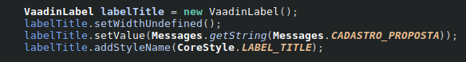
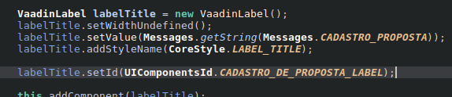

É uma boa prática para poder facilitar a captura de elementos/componentes na tela, com a configuração de id podemos resumir melhor nossa construção do código de PageObjects.
Na tela do seu browser, você pode Inspecionar o elemento desejado que está sem id e pela sua herança, ir de pai em pai procurando uma id que contenha o texto como id=”…ViewImpl” no final de seu cadastro.
Esse id provavelmente será a classe JAVA ou classe que invoca o componente que possui o id desejado,
Vai ter a conotação do tipo
Label ou VaadinLabel
Veja exemplo:

O que é necessário realizar é apenas referenciar o objeto, com a chamada do método setId(Nome do ID que vai ser configurado) conforme exemplo abaixo:
